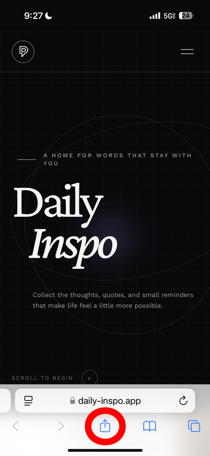
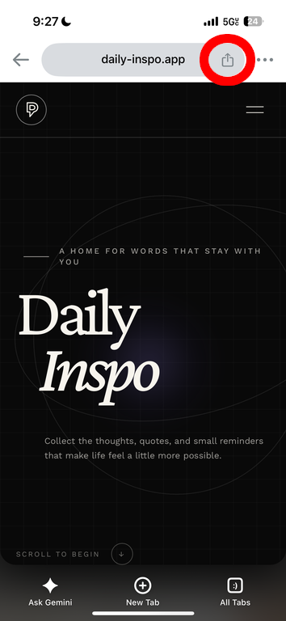

Questions, answered.
Does Daily Inspo have an app?
Not yet, but you can add Daily Inspo to your phone’s Home Screen.
How do I add Daily Inspo to my home screen?
On an iPhone, open Daily Inspo in Safari, then follow these two steps.
-
Step 1
Tap the Share button (could be at the top or bottom depending on the browser).
Safari:

Chrome:

-
Step 2
Scroll down in the sharing menu and tap Add to Home Screen.

How do I get back to the Home Page?
In your browser’s address bar, add /landing/ after daily-inspo.app, then tap go or Enter. For example: daily-inspo.app/landing/
Need help in the meantime? Contact support.